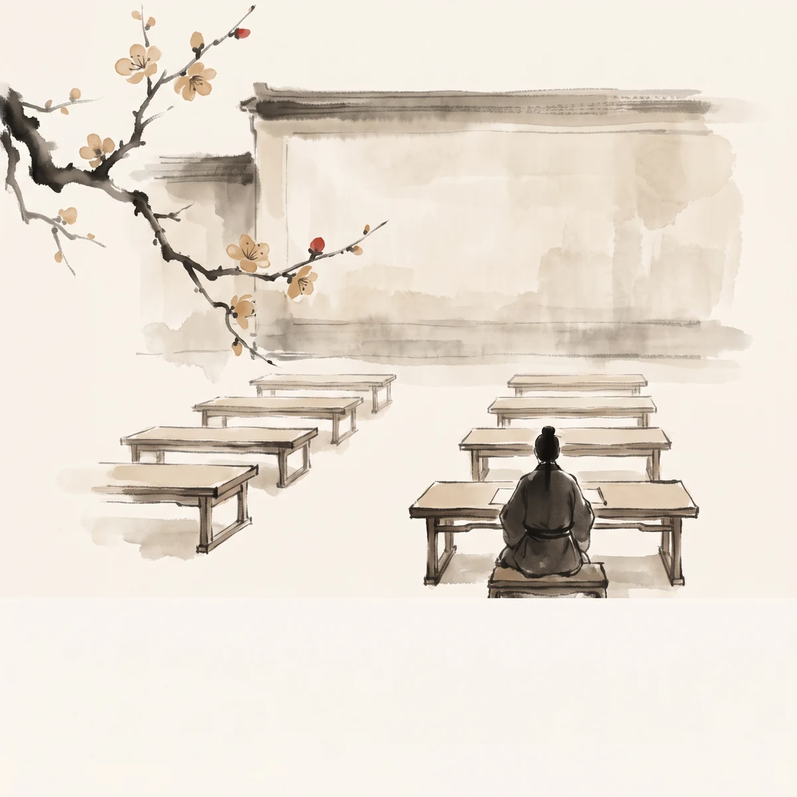

取经教育学专题
轨标：跨界趣谈 W128 A4 多方向并行批次第三次第 1 个新维度·七段式·基于 W083 八十一难结构学 + W091 取经团队心理学 + W101 身体地理学 + W118 取经政治学深化·与 W083/W091/W101/W118/W120/W124 形成"结构+心理+身体+政治+美学+伦理+教育"七层结构·A4 方向第 29 个新维度 出处：v2.2.42 初始导入（无 W 编号·W424 溯源回填） 核验状态：未核验

一、开篇引文
"心生，种种魔生；心灭，种种魔灭。" ——《西游记》第十三回
取经项目本质上是一场教育实验。唐僧作为教育者，悟空作为"心猿"学习者，八戒作为本能学习者，沙僧作为沉默学习者，每一难都是一次教育情境。本文以赫尔巴特、杜威、蒙特梭利、皮亚杰四位教育学理论家为镜，对照《西游记》的教育结构，揭示"教育性教学+经验学习+环境准备+认知发展"四重教育维度。
二、理论框架：四位理论家对照
2.1 赫尔巴特《普通教育学》教育性教学
赫尔巴特的教育学以"教育性教学"（educative teaching）为核心，主张教学永远具有教育性，没有无教育的教学。其理论包括：兴趣的多方面性（many-sidedness of interest）、统觉（apperception）过程（新观念与旧观念结合）、管理（government）与训育（discipline）的区分、教学形式阶段（明了+联想+系统+方法）。教育目的是培养道德性格。
与《西游记》的对照：唐僧作为教育者，对悟空的"教育性教学"贯穿全书。紧箍儿是"管理"（强制约束），而取经使命的反复申明是"训育"（性格塑造）。唐僧通过讲经、训诫、示范，将悟空的"野性"转化为"佛性"，正是赫尔巴特式的教育性教学——所有的"教学"（讲经/训诫）都指向"教育"（道德性格培养）。
2.2 杜威《民主主义与教育》经验学习
杜威的教育哲学以"经验"（experience）为核心，主张"教育即生长"（education as growth）、"做中学"（learning by doing）、"教育即生活"（education as life）。经验包含主动（try）与被动（undergo）两个方面，反思（reflection）将经验转化为学习。民主社会的教育培养交流与合作能力。
与《西游记》的对照：八十一难是杜威式的"做中学"。悟空在每一难中"主动"尝试（try：降妖方法）并"被动"承受后果（undergo：失败/受伤/被训），通过反思（唐僧的训诫/观音的点化）将经验转化为学习。第27回三打白骨精后悟空被逐，是经验学习的断裂；第31回归来后悟空"懂了"唐僧的良苦用心，是经验学习的完成。
2.3 蒙特梭利《童年的秘密》环境准备
蒙特梭利教育法以"吸收性心智"（absorbent mind）、"敏感期"（sensitive period）、"准备好的环境"（prepared environment）、"观察"（observation）为核心。儿童在准备好的环境中自由选择工作，教师作为观察者而非主导者。教育目的是解放儿童的内在生命力。
与《西游记》的对照：取经团队是蒙特梭利式的"准备好的环境"。观音安排的取经团队五众（唐僧+悟空+八戒+沙僧+白龙马）+ 路线（八十一难）+ 法宝（紧箍儿/金箍棒/九齿钉耙）构成准备好的环境。每个角色在环境中自由"工作"（降妖/化缘/挑担/骑马），观音作为"观察者"在关键时刻点化而非主导。悟空的"敏感期"是大闹天宫期（动作敏感期），取经期是"社会化敏感期"。
2.4 皮亚杰《儿童心理学》认知发展
皮亚杰的认知发展理论以"图式"（schema）、"同化"（assimilation）、"顺应"（accommodation）、"平衡"（equilibration）为核心。认知发展经历四个阶段：感知运动阶段（0-2岁）+ 前运算阶段（2-7岁）+ 具体运算阶段（7-11岁）+ 形式运算阶段（11岁+）。学习是图式的同化与顺应过程。
与《西游记》的对照：悟空的认知发展是皮亚杰式的阶段跃迁。大闹天宫期是"前运算阶段"（自我中心+万物有灵+集中注意），认为凭金箍棒可征服天庭；取经早期（第14-27回）是"具体运算阶段"（具体情境推理+守恒），开始理解唐僧的约束但限于具体情境；取经中后期（第31-100回）是"形式运算阶段"（抽象推理+假设演绎），能理解佛法抽象原则并主动降妖。三打白骨精是同化失败（用大闹天宫的图式理解妖魔伪装），真假美猴王是顺应完成（接受"心"的多重性）。
三、主题分析：四重教育维度
3.1 教育性教学（唐僧作为教育者·赫尔巴特教育性教学）
唐僧的教育方法体现赫尔巴特的教育性教学原则。念紧箍咒是"管理"（即时约束），讲经说法是"教学"（知识传授），训诫示范是"训育"（性格塑造）。三者统一于"道德性格培养"的教育目的。
line 号：第14回 line 1393（紧箍儿具身化·管理机制）+ 第27回 line 2380（三打白骨精后被逐·训育断裂）+ 第100回 line 7085（五圣成真·教育目的达成）
3.2 经验学习（八十一难作为做中学·杜威经验学习）
八十一难是杜威式的经验学习场域。每一难包含"尝试-承受-反思"三重结构：悟空尝试降妖（try）→ 承受失败或唐僧误解（undergo）→ 反思后获得新理解（reflection）。三打白骨精、真假美猴王、女儿国等关键难是经验学习的转折点。
line 号：第27回 line 2380（三打白骨精·经验学习断裂与重建）+ 第58回 line 4950（真假美猴王·经验学习深化）+ 第81回 line 5952（镇海寺·经验学习具象化）
3.3 环境准备（取经团队作为准备好的环境·蒙特梭利）
观音安排的取经团队是蒙特梭利式的"准备好的环境"。五众各有角色（教育者/守护者/本能者/沉默者/承载者），路线预设八十一难，法宝分配按需。观音作为"观察者"在关键节点点化（如第17回点化悟空访观音+第42回悟空访观音降红孩儿），符合蒙特梭利"教师作为观察者"原则。
line 号：第8回 line 840（佛祖发愿取经项目·环境准备起点）+ 第12回 line 1183（观音长安寻取经人·环境搭建）+ 第15回 line 1450（收伏龙马·五众成形）
3.4 认知发展（悟空从具体运算到形式运算·皮亚杰）
悟空的认知发展经历皮亚杰式的阶段跃迁。大闹天宫期（前运算）→ 取经早期（具体运算）→ 取经中后期（形式运算）。关键转折点：三打白骨精（同化失败）→ 真假美猴王（顺应完成）→ 灵山取经（形式运算稳定）。
line 号：第7回 line 864（大闹天宫·前运算阶段）+ 第58回 line 4950（真假美猴王·形式运算阶段开始）+ 第100回 line 7085（五圣成真·认知发展完成）
四、古今对位
| 教育维度 | 《西游记》 | 当代教育 |
|---|---|---|
| 教育性教学 | 唐僧念咒+讲经+训诫 | 班主任制+德育课程+榜样示范 |
| 经验学习 | 八十一难做中学 | 项目制学习+实习+实践课程 |
| 环境准备 | 观音安排取经团队 | 蒙特梭利教室+创客空间+学习环境设计 |
| 认知发展 | 悟空阶段跃迁 | 皮亚杰阶段理论+发展性评价 |
五、与其他专题关系
- 与 W083 八十一难结构学 形成"结构+教育"双层：八十一难既是数学结构也是教育场域
- 与 W091 取经团队心理学 形成"心理+教育"双层：心理分析补充教育分析
- 与 W101 身体地理学 形成"身体+教育"双层：紧箍儿既是身体规训也是教育管理
- 与 W118 取经政治学 形成"政治+教育"双层：取经团队既是政治契约也是教育共同体
- 与 W120 取经美学 形成"美学+教育"双层：教育过程的美学体验
- 与 W124 取经伦理学 形成"伦理+教育"双层：德性培养的教育路径
- 与 W083/W091/W101/W118/W120/W124 形成七层结构
六、关键术语表
| 术语 | 理论家 | 西游对照 |
|---|---|---|
| 教育性教学 | 赫尔巴特 | 唐僧讲经训诫的教育性 |
| 兴趣多方面性 | 赫尔巴特 | 八十一难的多方面兴趣 |
| 统觉 | 赫尔巴特 | 悟空新旧观念结合 |
| 管理 | 赫尔巴特 | 紧箍儿的管理机制 |
| 训育 | 赫尔巴特 | 唐僧训诫的性格塑造 |
| 教育即生长 | 杜威 | 悟空从野性到佛性的生长 |
| 做中学 | 杜威 | 八十一难的做中学 |
| 经验 | 杜威 | 取经 14 年的经验累积 |
| 反思 | 杜威 | 唐僧训诫后的反思 |
| 吸收性心智 | 蒙特梭利 | 悟空吸收佛法的心智 |
| 敏感期 | 蒙特梭利 | 悟空动作敏感期+社会化敏感期 |
| 准备好的环境 | 蒙特梭利 | 观音安排的取经团队 |
| 观察 | 蒙特梭利 | 观音作为观察者 |
| 图式 | 皮亚杰 | 悟空的认知图式 |
| 同化 | 皮亚杰 | 悟空用大闹天宫图式理解妖魔 |
| 顺应 | 皮亚杰 | 悟空接受佛法的新图式 |
| 平衡 | 皮亚杰 | 同化与顺应的平衡 |
| 形式运算 | 皮亚杰 | 悟空后期的抽象推理 |
七、总结
《西游记》是一部教育学寓言。唐僧作为教育者，以教育性教学（赫尔巴特）塑造悟空的道德性格；八十一难作为经验学习场域（杜威），让悟空在做中学；取经团队作为准备好的环境（蒙特梭利），由观音作为观察者安排；悟空的认知发展经历从具体运算到形式运算的阶段跃迁（皮亚杰）。四重教育维度交织，构成"教育性教学+经验学习+环境准备+认知发展"的完整教育结构，与 W083 八十一难结构学、W091 取经团队心理学、W101 身体地理学、W118 取经政治学、W120 取经美学、W124 取经伦理学形成七层结构，A4 方向第 29 个新维度。